Как добавить форму с кнопкой и показать ее в интерфейсе
В этом примере вы добавите в проект форму с кнопкой, при нажатии на которую будет появляться уведомление «Кнопка работает!». Эту форму вы добавите в раздел Сервис.
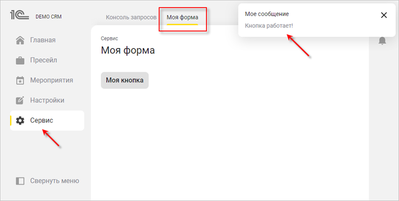
Откройте демонстрационное приложение DEMO CRM в среде разработки и выполните следующие действия:
- Проект состоит из подсистем и пакетов. Форма — это компонент
интерфейса. Вы добавите форму в подсистему Основное. Чтобы добавить компонент интерфейса в проект нажмите в контекстном меню подсистемы Основное;
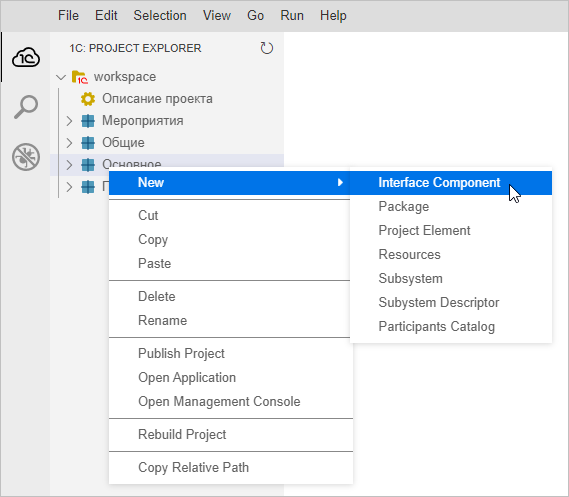
- В палитре команд выберите системный компонент, от которого будет
наследоваться ваш компонент интерфейса — это компонент Форма;
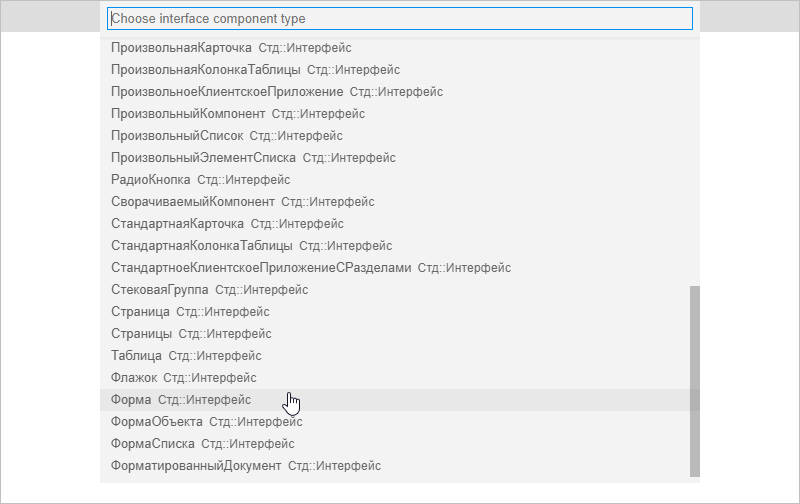
- Задайте имя вашего компонента — МояФорма;
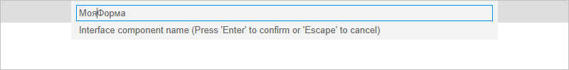
- «1С:Кабинет сотрудника» добавит компонент МояФорма в проект и откроет его в редакторе. Ваша задача заключается
в том, чтобы добавить в состав формы (свойство Содержимое) экземпляр системного
компонента Кнопка.Нажмите New Content в контекстном меню структуры формы (на строке Форма);
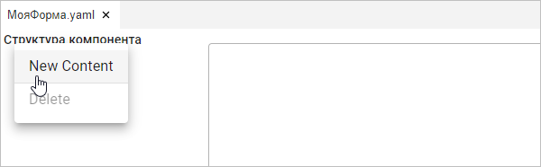
- Выберите системный компонент Кнопка;
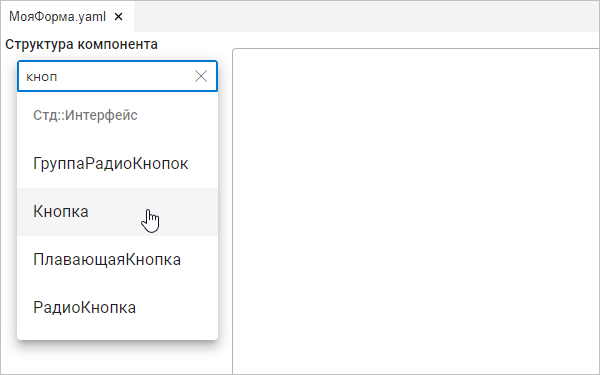
- Свойства кнопки вы отредактируете в YAML-редакторе. Для этого выделите кнопку в структуре формы и нажмите EDIT IN
SOURCE в панели PROPERTIES;
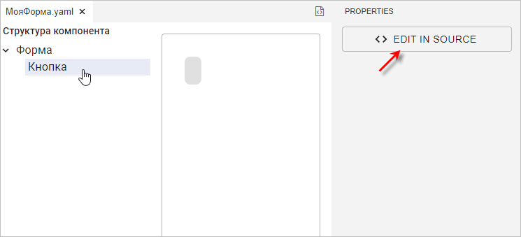
- После типа системного компонента Кнопка задайте заголовок
кнопки и имя метода, который будет обрабатывать событие ПриНажатии
кнопки:
Заголовок: Моя кнопка ПриНажатии: ОбработчикПриНажатии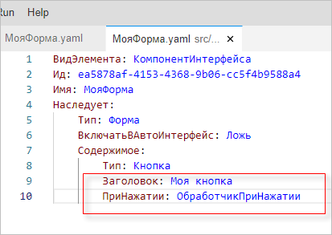
- Обработчик события ПриНажатии удобнее всего разместить в модуле компонента. Чтобы компоненту МояФорма добавить модуль нажмите в контекстном меню компонента МояФорма;
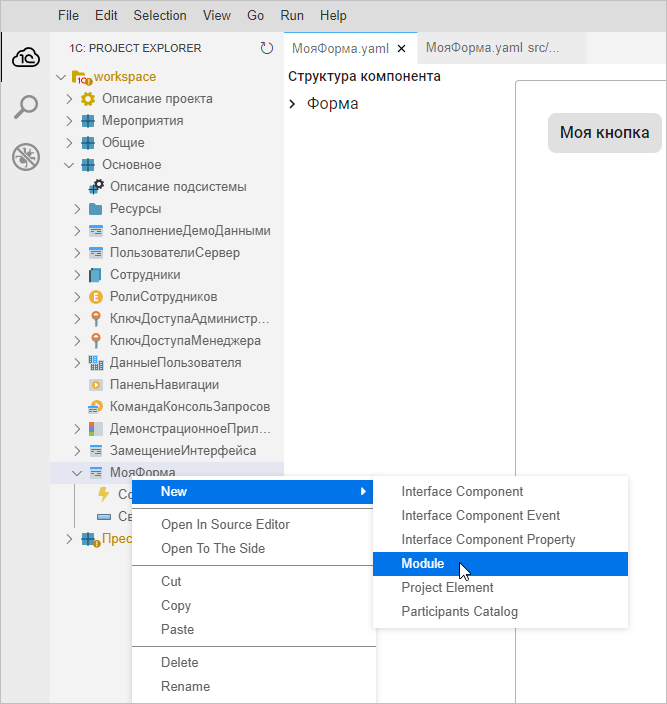
- У компонента может быть два модуля: клиентский модуль —
Модуль, и серверный модуль — Модуль
менеджера. Вам нужен клиентский модуль;
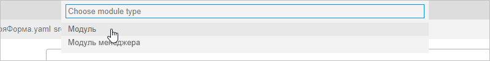
- Используя контекстную подсказку введите код обработчика на встроенном
языке:
метод ОбработчикПриНажатии() пер Уведомление = новый Уведомление("Мое сообщение", "Кнопка работает!") МенеджерУведомлений.Показать(Уведомление) ;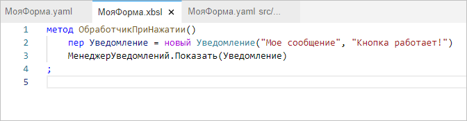
Этот обработчик показывает уведомление «Кнопка работает!»; - Теперь осталось последнее действие — включить в интерфейс команду открытия этой формы. Из предыдущих примеров вы уже знаете, где находится командный интерфейс. Чтобы изменить его нажмите на элемент проекта
ПанельНавигации;

- Пролистайте файл до конца, найдите описание секции Сервис. После команды открытия консоли запросов добавьте экземпляр навигационной команды , которая открывает форму
МояФорма:
- Тип: НавигационнаяКоманда Представление: Моя форма ТипФормы: МояФорма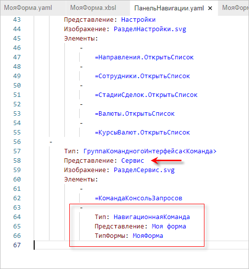
- Опубликуйте проект на сервере и перезапустите приложение. Нажмите и вы увидите сообщение «Кнопка работает!».